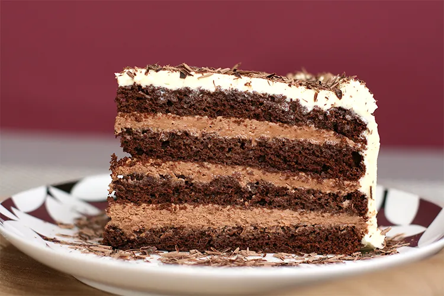

Home
Chocolate Mousse Layer Cake

Description:
This is delectable, homegrown South African dessert!
It's best when prepared the day before to give it time to firm in the fridge.
Cake batter ingredients:
- 3 extra large eggs, at room temperature
- 1 cup (250ml) canola oil
- 2 t (10 ml) coffee granules to make 1 cup (250 ml) hot black coffee
- 1 x 650g Ina Paarman's Chocolate Cake mix
Chocolate mouse ingredients:
- 1 cup (250 ml) water
- 1 x 310 g Ina Paarman's Chocolate Mousse mix
- 1 cup (250ml) fresh whipping cream
Steps:
- Adjust the oven rack to middle position and preheat 180°C.
- Butter two 22cm cake pans and line the bases with baking paper.
- Beat the eggs and oil together on high speed with an electric mixer of hand beater until well blended.
- Add the coffee and beat on high speed for 1 minute.
- Add Cake mix and fold in with a spatula until just blended.
- Divide the mixture evenly between the two pans.
- Bake for 35 - 40 minutes.
- Leave the cakes to cool in the pans for 10 minutes.
- Turn out onto a cooling rack and leave until cold.
- Cut each cake through the middle to form two layers.
- When the inside is cold the cakes can be sandwiched together with mousse.